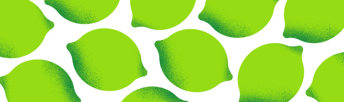

How the Sponsorship Works
The creator promotes the meal delivery service during their live stream and encourages viewers to place their first order.
A sponsorship widget is displayed on stream, tracking the campaign's progress in real time and showing how many orders are needed to reach each milestone.
As viewers place orders, the widget updates automatically. Every completed order contributes to the campaign goal and triggers an on-stream alert, highlighting the viewer who placed the order and creating engaging moments for the entire community.
The more orders the audience completes, the further the campaign progresses, helping the creator unlock rewards while driving measurable results for the brand.